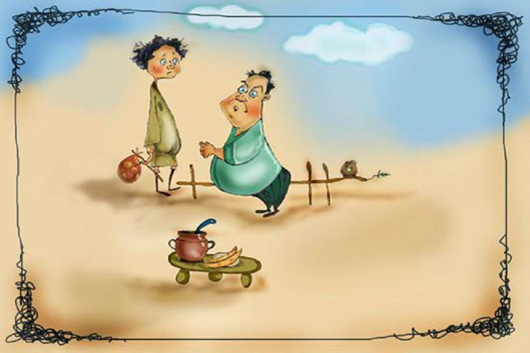

მუჭანახევარა



კომბლე
კომბლეს ცხვრები დაიკარგებიან, თუმცა ძებნის შემდეგ თავის ცხვრების გამტაცებელს იპოვნის
ნაცარქექია
ნაცარქექია ნაცრის ქექვის მეტს არაფერს აკეთებდა და ის სახლიდან გააგდეს, თუმცა თავისი ჭკუის და მოხერხებულობის საშუალებით ის ქონების ბატონ-პატრონი შეიძლება გახდეს
მუჭანახევარა
მუჭანახევარა თავისი სისულელის გამო სხვადასხვა ფათერაკში გაეხვევა
ლომი და კურდღელი
ტყის მეფე ლომი კურდღლის შეჭმას გადაწყვეტს, თუმცა კურდღელი სულაც არ აპირებს ლომის საჭმელი გახდეს